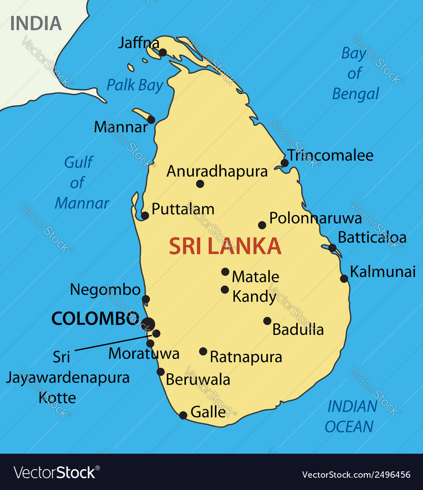
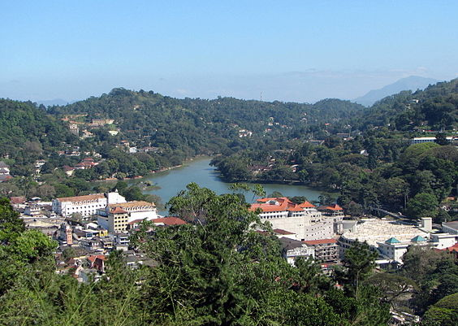

Hi, My name is Mohamed Suhayl Mohamed Siddique (I know it's a long name)! You can just call me Suhayl in short! I was born in Japan in the year of 1994, I am the oldest in the family and first to go to college here in the USA. I graduated from Mather High School in 2013. Now, as you are reading this you may ask your question why was I born in Japan? It is a long story, so get yourself a box of popcorn!
Now that you have come back, allow me to explain myself. My parents moved to Japan in 1990 from Sri Lanka located in South East Asia a small island besides India. My parents ran a business in Japan. So indeed, they are fluent in Japanese as well as I am. I speak fluently in Japanese as I lived there for 11 years before moving back to Sri Lanka. Moving back to my country was the hardest journey I had to go through. Adjusting from one place to a new place was not something that I had in my mind. I want you to keep in mind that I did not know any English at the age of 12, and I was forced to learn English if I wanted to continue education in Sri Lanka.
 My parents decided to move United States in 2009 after 4 years later settling in Sri Lanka. They had thought that me and my siblings had higher chances of studying better in US Education system. As a child, it is not fun to move around when I was about to get the lifestyle in Sri Lanka, then knowing that I had to move here and make new more friends, live in new country with no relatives, and attend nearest school.
After moving here, everything has changed my life. I met new friends that I still in keep touch with sometimes. I graduated from high school and started to attend Wilbur Wright College. Transferred to IIT in spring semester.